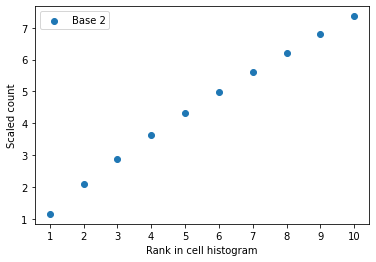

def get_scaling_factor_1(x,cutoff=0.05):
''' x is a normlized cell '''
x=x.astype('float16') #To prevent error in numerical calculation
y=np.array(x.value_counts().sort_index().head(2).index)
if np.abs(y[0]-y[1]/2)>10**-5:
raise
return 1/y[0]Functions to denormlize scRNA-seq data
The main functions of denormlizing the normlized scRNA-seq data
Functions
scdenorm
scdenorm (fin:str, fout:str=None, gxc:bool=False, base:float=None, cont:float=1.0, rint:bool=True, method:str='Top2', cutoff:float=0.05, verbose:int=0)
denormalize takes a cell * gene expression matrix that has been normalized according to single-cell RNA sequencing preprocessing procedure and return a recovered count matrix by reversing the logarithmization step and then the total-count normalization step utilizing the unscale function. If the imput matrix is not normalized by first total-count scaling then logarithmization, then the function produces an error indicating so. We also handle matrices that have not been logarithmized. denormalize: csr_matrix -> csr_matrix
| Type | Default | Details | |
|---|---|---|---|
| fin | str | The input file or AnnData | |
| fout | str | None | The path of output file if provided |
| gxc | bool | False | Change to True if the data is stored with gene by cell |
| base | float | None | Give the base if it is known |
| cont | float | 1.0 | The constant plused after scaling |
| rint | bool | True | Round elements of the result to the nearest integer |
| method | str | Top2 | Top2 or Reg |
| cutoff | float | 0.05 | |
| verbose | int | 0 |
solve_bc
solve_bc (p)
auto_detect
auto_detect (smtx, cutoff)
solve_s
solve_s (s, C, X)
get_scaling_factor_by_reg
get_scaling_factor_by_reg (x, cutoff=0.05)
get_scaling_factor takes a cell vector and its index in the gene expression matrix that has been scaled according to single-cell RNA sequencing preprocessing procedure and return the scaling factor for the cell, or produce an error indicating the cell has not been processed by our assumption.
get_scaling_factor_by_top2
get_scaling_factor_by_top2 (x, cutoff=0.05)
get_scaling_factor takes a cell vector and its index in the gene expression matrix that has been scaled according to single-cell RNA sequencing preprocessing procedure and return the scaling factor for the cell, or produce an error indicating the cell has not been processed by our assumption.
get_scaling_factor
get_scaling_factor (x, cutoff=0.05, method='Top2')
get_scaling_factor takes a cell vector and its index in the gene expression matrix that has been scaled according to single-cell RNA sequencing preprocessing procedure and return the scaling factor for the cell, or produce an error indicating the cell has not been processed by our assumption. get_scaling_factor: ndarray Nat (Num) -> Num
check_unscale
check_unscale (x, base=2.718281828459045, cont=1, cutoff=0.05, method='Top2', plot=True)
select_base
select_base (x, cont=1, cutoff=0.05, method='Top2', plot=False)
unscale_mat
unscale_mat (smtx, base=2.718281828459045, cont=1, cutoff=0.05, rint=True, method='Top2', gpu=False)
unscale takes a cell * gene expression matrix that has been quality-controlled and scaled according to single-cell RNA sequencing preprocessing procedure and return a recovered count matrix by finding the scaling factor for each cell, or produce an error indicating the matrix has not been processed by our assumption. unscale: csr_matrix -> csr_matrix
def get_scaling_factor_2(x,cutoff=0.05):
"""
get_scaling_factor takes a cell vector and its index in the gene expression matrix
that has been scaled according to single-cell RNA sequencing preprocessing procedure
and return the scaling factor for the cell,
or produce an error indicating the cell has not been processed by our assumption.
get_scaling_factor: ndarray Nat (Num) -> Num
"""
x=x.astype('float16')
x=pd.Series(x)
xm=x.min()
x=x/xm
if np.abs(x-x.round()).mean()>cutoff:
raise
return 1/xmcheck_plot
check_plot (c, idx, n=10)
Check_plot takes a cell vector and its index in the gene expression matrix and produce a plot of the first N most frequent values against their ranks. Such a plot is used for error-checking in the unscaling process.
create test data
ad=sc.datasets.pbmc3k()/home/huang_yin/anaconda3/envs/sc/lib/python3.9/site-packages/anndata/__init__.py:51: FutureWarning: `anndata.read` is deprecated, use `anndata.read_h5ad` instead. `ad.read` will be removed in mid 2024.
warnings.warn(ad=ad[:10].copy()adAnnData object with n_obs × n_vars = 10 × 32738
var: 'gene_ids'sc.pp.normalize_total(ad, target_sum=1e4)
#sc.pp.log1p(ad)
smtx = ad.X.tocsr().asfptype()smtx = ad.X.tocsr().asfptype()scaled_counts=smtxi,cutoff=0,0.001
get_scaling_factor(scaled_counts.getrow(i).data, cutoff)0.24209999655982023scaling_factors,success_cells=[],[]
for i in tqdm(range(scaled_counts.shape[0])):
try:
scaling_factors.append(get_scaling_factor(scaled_counts.getrow(i).data,cutoff))
success_cells.append(i)
except:
logging.warning(f"Warning:The cell {i} fails to denormlize, and be deleted")100%|██████████| 3593700/3593700 [20:53<00:00, 2867.61it/s]CPU times: user 20min 23s, sys: 33.2 s, total: 20min 56s
Wall time: 20min 53sscaling_factors,success_cells=[],[]
for i in tqdm(range(scaled_counts.shape[0])):
try:
scaling_factors.append(get_scaling_factor_2(scaled_counts.getrow(i).data,cutoff))
success_cells.append(i)
except:
logging.warning(f"Warning:The cell {i} fails to denormlize, and be deleted")100%|██████████| 2700/2700 [00:01<00:00, 2064.87it/s]CPU times: user 1.31 s, sys: 11.2 ms, total: 1.32 s
Wall time: 1.31 sscaling_factors = diags(scaling_factors)
counts = scaling_factors*scaled_countsCPU times: user 38.4 s, sys: 18.2 s, total: 56.6 s
Wall time: 56.7 scounts<3593700x32738 sparse matrix of type '<class 'numpy.float64'>'
with 3043842604 stored elements in Compressed Sparse Row format>counts.dataarray([4. , 1. , 9.99999954, ..., 1. , 1. ,
1. ])counts.dataarray([4. , 1. , 9.99999954, ..., 1. , 1. ,
1. ])scaled_counts<326700x32738 sparse matrix of type '<class 'numpy.float32'>'
with 276712964 stored elements in Compressed Sparse Row format>counts.dataarray([3.59520866, 0.89880217, 8.98802125, ..., 0.34156169, 0.34156169,
0.34156169])smtx.dataarray([1.6352079, 1.6352079, 2.2258174, ..., 1.7980369, 1.7980369,
2.779648 ], dtype=float32)x=smtx.getrow(0).data
x=pd.Series(x).value_counts().sort_index()
x=np.exp(np.array(x.index))-1
x=x/(x[0]+0.1)
np.abs(x-x.round()).mean()0.24593542762363435np.alltrue(x.index[:2]==x.sort_values(ascending=False).index[:2])Truepd.Series(x).value_counts().sort_index().index==pd.Series(x).value_counts().sort_values(ascending=False).indexarray([ True, True, False, False, False, False, False, False, False,
False, False, True, False, False, False, False, False, False,
False, False, False, True, False, False, False, False, False,
False, False, False, False, True, False, False])Testing get_scaling_factor
x=smtx.getrow(1).dataxarray([ 4.0791354, 2.0395677, 2.0395677, ..., 2.0395677, 16.316542 ,
2.0395677], dtype=float32)get_scaling_factor(x,method='Top2')0.4904214559386973get_scaling_factor(x,method='Reg')0.49042145712545715get_scaling_factor_by_top2(x)0.4904214559386973get_scaling_factor_by_reg(x)0.49042145712545715Testing check_unscale
x=ad1.X.getrow(0).datacheck_unscale(x,method='Top2')Truecheck_unscale(x,method='Reg')Truecheck_unscale(x,base=2)ERROR:root:The base 2 is not match with the data.FalseTesting scdenorm
mmwrite('data/scaled.mtx', smtx[1:10,])ad1=sc.read('data/scaled.mtx')ad1AnnData object with n_obs × n_vars = 9 × 32738mmwrite('scaled_tran.mtx', smtx.transpose())1.Testing unscale_mat
- input is a sparse matrix with cell by gene
- output is a sparse matrix after denormalization
unscale_mat(ad1.X,method='Top2')100%|██████████| 9/9 [00:00<00:00, 652.27it/s](<9x32738 sparse matrix of type '<class 'numpy.float64'>'
with 7403 stored elements in Compressed Sparse Row format>,
[0, 1, 2, 3, 4, 5, 6, 7, 8])unscale_mat(ad1.X,method='Reg') 0%| | 0/9 [00:00<?, ?it/s]WARNING:root:Warning:The cell 3 fails to denormlize, and be deleted
100%|██████████| 9/9 [00:00<00:00, 201.71it/s](<8x32738 sparse matrix of type '<class 'numpy.float64'>'
with 6881 stored elements in Compressed Sparse Row format>,
[0, 1, 2, 4, 5, 6, 7, 8])2.Testing scdenorm with right base
scdenorm('data/scaled.mtx',fout='data/scd_scaled.h5ad',base=np.e, verbose=1,cutoff=0.05,method='Top2')INFO:my_logger:Reading input file: data/scaled.mtx
INFO:my_logger:The dimensions of this data are (9, 32738).
INFO:my_logger:Denormlizing ...the base is 2.718281828459045
100%|██████████| 9/9 [00:00<00:00, 899.38it/s]
INFO:my_logger:Writing output file: data/scd_scaled.h5adscdenorm('data/scaled.mtx',fout='data/scd_scaled.h5ad',base=np.e, verbose=0,cutoff=0.05,method='Reg') 0%| | 0/9 [00:00<?, ?it/s]WARNING:my_logger:Warning:The cell 3 fails to denormlize, and be deleted
100%|██████████| 9/9 [00:00<00:00, 219.13it/s]3.Testing scdenorm with wrong base
scdenorm('data/scaled.mtx',fout='data/scd_scaled.h5ad',base=2, verbose=1)INFO:my_logger:Reading input file: data/scaled.mtx
INFO:my_logger:The dimensions of this data are (9, 32738).
INFO:my_logger:Failed to obtain scale factor. Error is 0.23859739923659193. x is [ 1. 1.79478553 2.49621531 3.13708999 3.73423045 4.29941127
4.83767872 5.35576114 5.85365854 6.33809924 6.80571909 7.25988225
7.71068124 8.14129521 8.57190917 8.98906644 9.39949537 9.80319596
10.20016821 10.97392767 11.35071489 11.7275021 12.09083263 12.81749369
13.17409588 13.52396972 13.87384357 14.22371741 14.56013457 14.89655172
15.23296888 15.56938604 15.89234651 16.21530698 16.53826745 17.18418839
17.49369218 17.80319596 18.42220353 18.73170732 19.0412111 20.81749369
21.11354079 21.40958789 22.25735913 23.38772077 23.93944491 27.41126997
28.9587889 31.67703953 32.8881413 43.06139613]
INFO:my_logger:The base 2 is not match with the data.
ERROR:my_logger:Denormlization has failed. Output the orignal data
INFO:my_logger:Writing output file: data/scd_scaled.h5ad
4.Testing scdenorm without base
scdenorm('data/scaled.mtx',fout='data/scd_scaled.h5ad', verbose=1)INFO:root:Reading input file: data/scaled.mtx
INFO:root:The dimensions of this data are (9, 32738).
INFO:root:select base
INFO:root:denormlizing ...the base is 2.718281828459045
100%|██████████| 9/9 [00:00<00:00, 990.65it/s]
INFO:root:Writing output file: data/scd_scaled.h5adb is 2.718281828459045scdenorm('data/scaled.mtx', verbose=1)INFO:root:Reading input file: data/scaled.mtx
INFO:root:The dimensions of this data are (9, 32738).
INFO:root:select base
INFO:root:denormlizing ...the base is 2.718281828459045
100%|██████████| 9/9 [00:00<00:00, 990.42it/s]b is 2.718281828459045AnnData object with n_obs × n_vars = 9 × 32738scdenorm(ad1, verbose=1)INFO:root:The dimensions of this data are (9, 32738).
INFO:root:select base
INFO:root:denormlizing ...the base is 2.718281828459045
100%|██████████| 9/9 [00:00<00:00, 960.72it/s]b is 2.718281828459045AnnData object with n_obs × n_vars = 9 × 32738